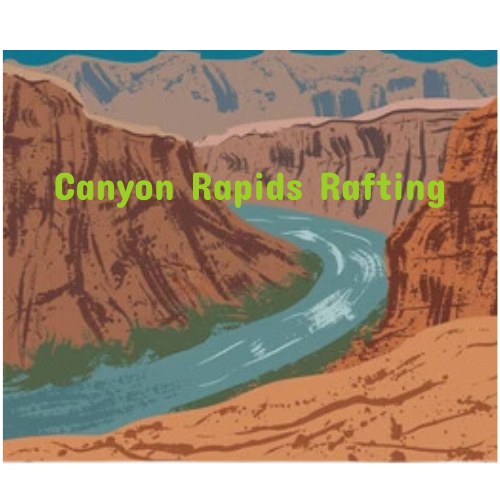

Overview
Purpose
Many people love to hike, others like to camp. We here at Canyon Rapids Rafting love to white water raft. No other activity will allow you the same access to beautiful spots on the rivers in the state of Arizona. Getting out into nature and connecting with this beautiful earth we live on is what we are all about. If you allow it, the experience can change you. Our purpose to help people explore in ways they seldom get the chance to. Reach out today and schedule your next trip.
Audience
White water rafting can be as extreme or as mellow as you want it. We have trips packages designed for all ages and experience levels. So whether you are on a life defining journey, looking for the next great adrenaline rush, or a memorable family outing we can help you out.
Branding
Website Logo
Style Guide
Color Palette
primary-color= Raisn Black #342E37; secondary-color= Tufts Blue #3C91E6; accent-color1= YellowG Green 9CCF26; accent-color2= Baby Powder #FAFFFD; Pallete URL: https://coolors.co/3c91e6-342e37-9ccf26-fafffd-fa824c
Typography
headings-font= Titan One, Sans Serif
paragraph-font= Exo, Sans Serif
Sample Text for paragraph font
Colored Callout font: Patrick Hand SC, Sans Serif
Navigation
Wireframes
Home Page Wireframe

About Us Page Wireframe